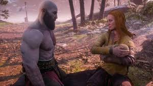
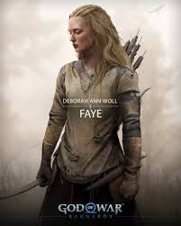

Origen y Naturaleza
Faye, cuyo verdadero nombre es Laufey, era una gigante (Jötunn) que abandonó Jötunheim para vivir en Midgard. Como miembro de la raza de los gigantes, poseía la capacidad de ver el futuro y entender las profecías que gobernaban los destinos de los dioses y los mortales. Faye eligió vivir una vida sencilla en los bosques de Midgard, lejos de las guerras y conflictos de los dioses.
Su naturaleza como gigante le otorgaba una fuerza sobrehumana y un conocimiento ancestral sobre los Nueve Reinos. A pesar de su poder, Faye prefería la paz y la vida familiar, construyendo una cabaña en el bosque donde criaría a su familia lejos de la influencia de los dioses nórdicos.
Relación con Kratos y Legado
Faye conoció a Kratos cuando este llegó a los reinos nórdicos después de destruir el Olimpo griego. Reconociendo en él a alguien que también buscaba escapar de su pasado, formó una familia con el antiguo dios de la guerra. Juntos tuvieron un hijo, Atreus, a quien Faye enseñó todo sobre su herencia gigante y las tradiciones de su pueblo.
Antes de morir, Faye dejó instrucciones muy específicas para que Kratos y Atreus esparcieran sus cenizas en el pico más alto de los Nueve Reinos. Este deseo aparentemente simple desencadenaría el viaje central de God of War (2018). Faye sabía que este viaje sería esencial para el desarrollo de su hijo y para la redención final de Kratos, demostrando su profunda comprensión de las profecías y los destinos entrelazados.

Faye, la gigante que cambió el destino de Kratos
El legado de Faye vive en Atreus